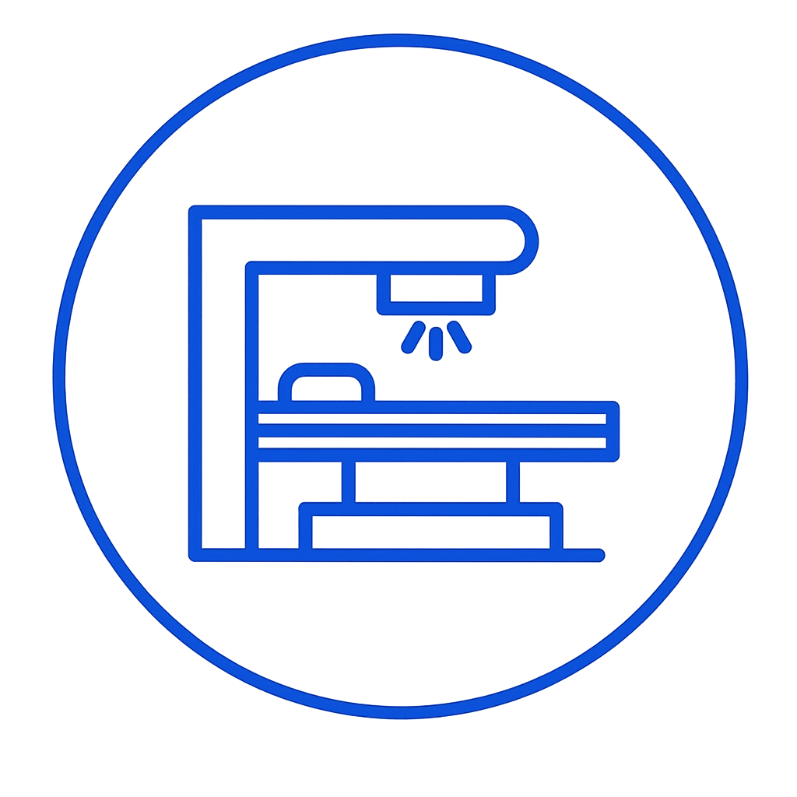

กรุณาเลือกรายการรับบริการ

เครื่องฉายรังสี
ในเวลาทำการ
คลินิกนอกเวลา

ต้องการปิดโปรแกรม Kiosk ใช่หรือไม่?
แตะมุมขวาบน 5 ครั้งเพื่อเปิดหน้านี้ • ตั้งค่าเครื่องพิมพ์ขั้นสูง: Ctrl+Shift+P
เปิดหน้านี้ด้วย Ctrl+Shift+P • ออกจาก Kiosk ด้วย Ctrl+Shift+Q